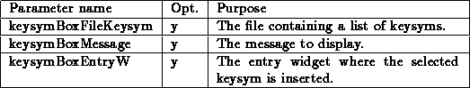
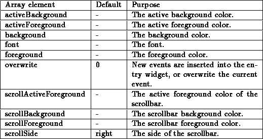
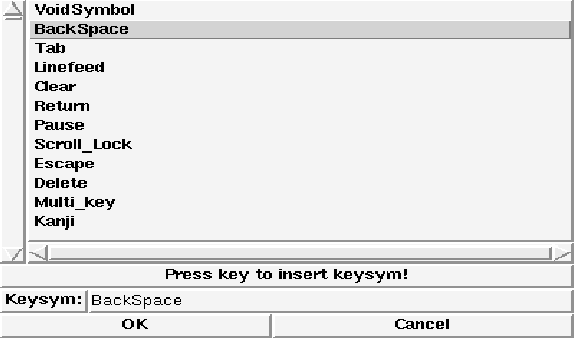
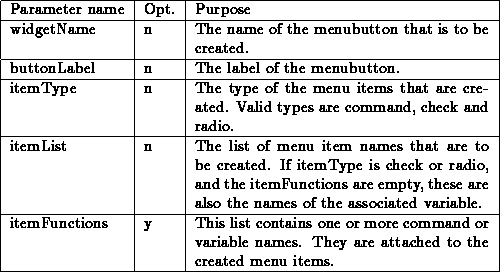
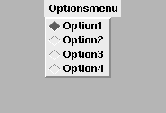
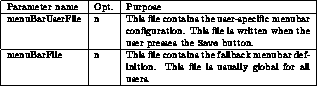

This template defines a new feature, that supports user changeable menu bars. The usage of this feature is more complex than it is for most other templates. Your code must contain a number of menubutton creations. These menubuttons need not be widget tree siblings, but is only possible to configure one set of sibling menubuttons at a time. After a set of menubuttons has been created, the procedure MenuBarInit is called. This procedure takes the following parameters:

This will load and initialize the menubar. To call the menubar configuration, the procedure MenuBarConf is called. This procedure gets the following parameter:

This pops up a dialog window in which all aspects of the menubar can be modified. Select the menubutton to configure from the upper right list. Setting the label to an empty string hides the menubutton. To configure a menu, the lower right list is used. A new menu is created when a menubutton is inserted that uses this menu. Select the menu to change, and press the Modify menu button. When all changes are done, the modified menubar should be saved to the local user-specific file by pressing the Save button.
To configure the different aspects of the menubar, there exists a global array named menuBar. A default value of ``-'' means that the Tk default value is used. This array contains elements that control the menubar (color, font etc.):

A small example of an initialization may look like this:
menubutton .myMenuBar.file -text {File}
menubutton .myMenuBar.misc -text {Misc}
menubutton .myMenuBar.help -text {Help}
MenuBarInit  /.local-menubar /usr/local/lib/global-menubar
pack append .myMenuBar .myMenuBar.file {left} .myMenuBar.misc {left}
.myMenuBar.help {right}
pack append . .myMenuBar {top fill}
frame .myMenuBar
This would create the following dialog box:

Figure: The template MenuBar (initialization)
A small example of an invocation of the configuration may look like this:
MenuBarConf .menuBar
This would create the following dialog box:

Figure: The template MenuBar (configuration)